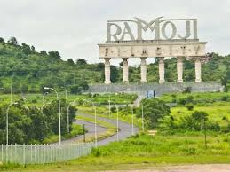
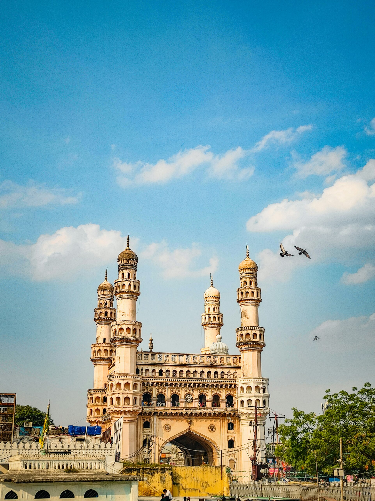
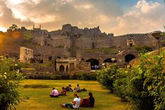

My Travel Journey
Traveling allows me to explore new cultures, foods, and landscapes. Here are some of the beautiful places I have visited over the years, shared in the order of my experiences.
My Trip to Hyderabad
Hyderabad is a city rich in history, architecture, and cinema culture. This was one of my most exciting trips where I explored famous tourist attractions and experienced the local heritage.
Ramoji Film City
Ramoji Film City was the most fun part of my trip. It is one of the largest film studio complexes in the world. I saw movie sets, gardens, and live shows. It felt like stepping into the world of cinema. The guided tour and entertainment activities made the experience unforgettable.

Charminar
Charminar is the symbol of Hyderabad. The architecture is beautiful, and the area around it is full of markets and street food. I enjoyed walking around and tasting famous Hyderabadi snacks. The historical importance of the monument impressed me.

Golconda Fort
Golconda Fort gave me a glimpse into the past. The massive walls, royal halls, and the sound echo system were fascinating. Climbing to the top provided an amazing view of the city. Learning about its history made the visit educational and exciting.
